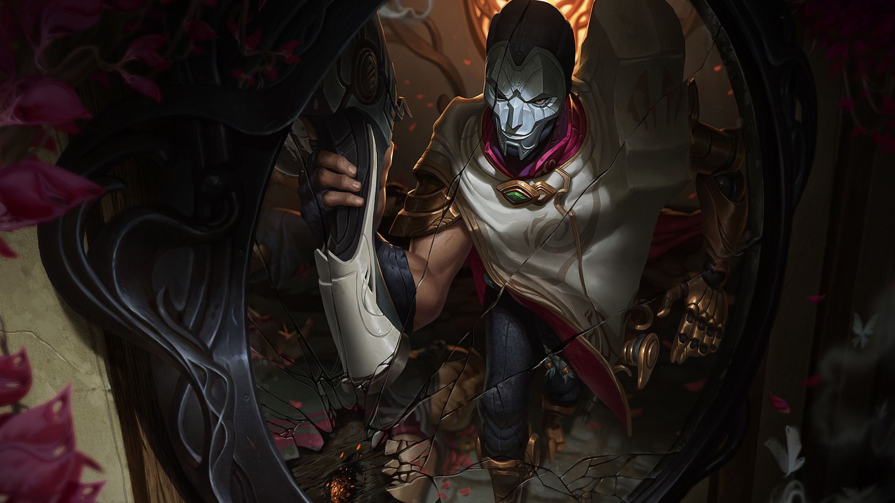

tu devrais essayer Jhin

jhin est un tirreur qui fait compter chaque balle, il ne possède que 4 munitions dans son chargeur, la quatrième étant bien plus puissante, chez jhin tout tourne autour du chiffre 4, chiffre qui porte malheur au japon car étant très proche du mot mort, jhin étant un meurtrier dans son histoire vivant dans un archipel proche du japon on peut comprendre pourquoi le chiffre 4 est aussi important.